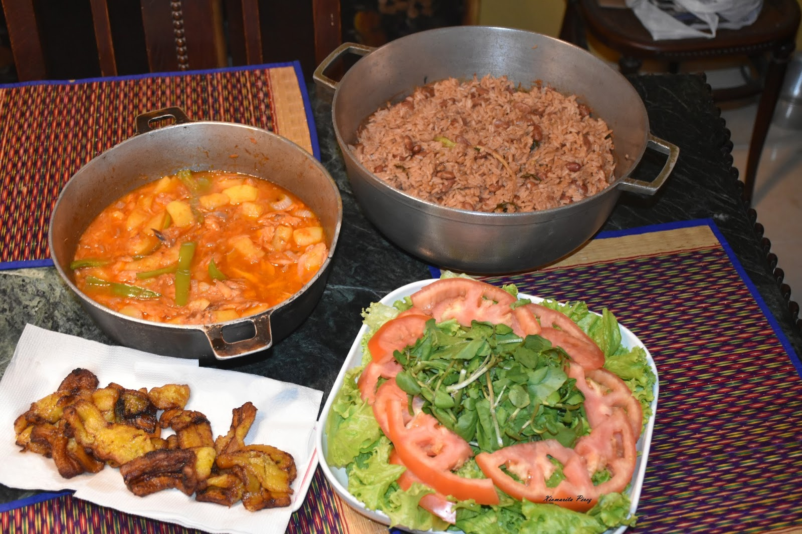
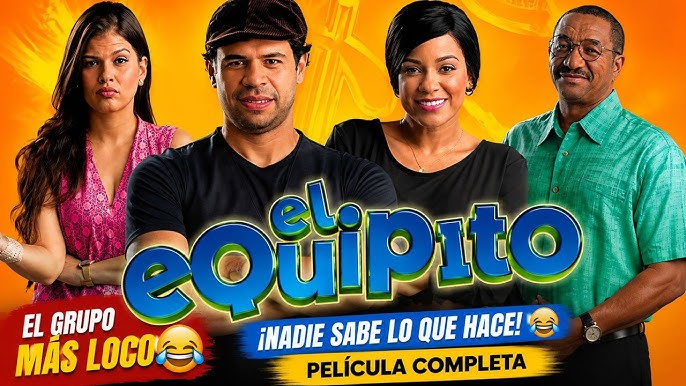

My Family
Here are some of my favorite foods

sancocho
Dominican cuisine is the fruit of the fascinating mix of Spanish, Taíno and African products.This has gave birth to a great variety of creole dishes, meaning, a cuisine with a European origin developed in America to which are added African influences.
Here are some of my favorite movies

malos padres
Que Leon
el equipito
scheming friends are brought over to face a paternity problem related to an inheritance. But neither knows who's the real father.
Director